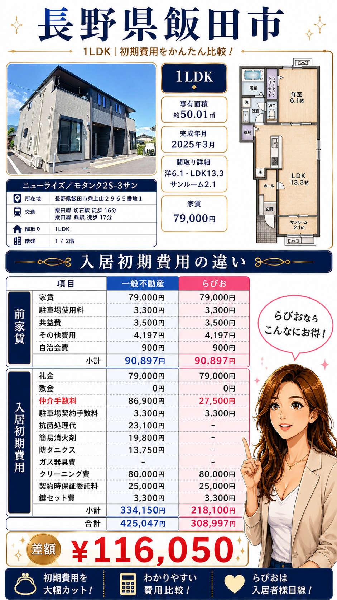
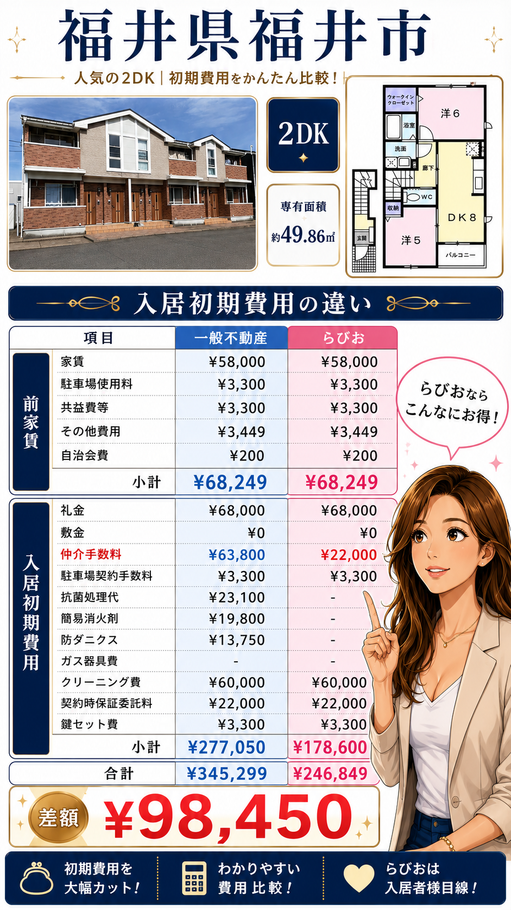
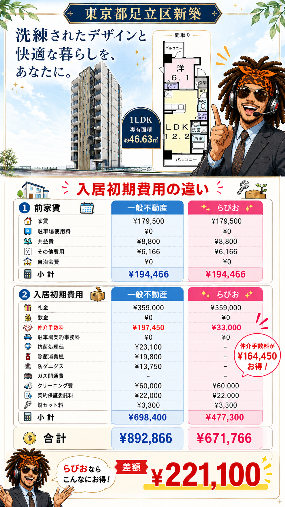

仲介手数料
大東建託物件は、どこの不動産業者でも仲介手数料がほぼ家賃の1.1ヶ月分になりがちな項目です。
全国対応 / 大東建託物件専門の仲介サービス
ご検討中の大東建託物件のURLをLINEで送るだけ。いい部屋ネット直営店や一般の仲介会社と比較した初期費用を、AIがすぐにお見積りします。
Before application
初期費用が高いと感じても、すべてが下げられるわけではありません。だからこそ、申し込む前に比較すべき項目を絞ることが大切です。
大東建託物件は、どこの不動産業者でも仲介手数料がほぼ家賃の1.1ヶ月分になりがちな項目です。
大東建託物件は、抗菌処理代や簡易消火剤などのオプション費用で初期費用が膨らみがちです。
申し込みを入れてしまうと対応できない場合が多いです。必ず申し込みをする前にお問い合わせください。
Why LAVISH
一般的な不動産会社は、店舗運営・広告・幅広い物件対応にコストがかかります。LAVISHは、大東建託物件の契約に精通した元直営店の店長が監修し、大東建託物件に特化して契約手続きのサポートに集中することで、利用者の初期費用負担を軽くする仕組みを作っています。
大東建託契約の専門家が、申し込みから引き渡しまで完璧にナビします。
LINEでご検討中の大東建託物件のURLを送るだけ。店舗来店なしで、まず比較できます。
内見同行や物件提案は行いません。初期費用の比較と契約手続きに絞ることで、コストを抑えています。
Case studies
ご検討中の大東建託物件でも、申し込む前なら比較できる項目があります。

長野県飯田市 / 1LDK
差額 116,050円
福井県福井市 / 2DK
差額 98,450円
東京都足立区新築 / 1LDK
差額 221,100円大東建託物件やDK SELECTの物件で部屋探しをしていると、初期費用の見積もりを見て「思ったより高い」と感じることがあります。家賃、敷金、礼金、前家賃、保証会社費用、仲介手数料、各種オプション費用など、複数の項目が重なるためです。
ただし、初期費用のすべてが自由に下がるわけではありません。物件ごとに決まっている費用もあります。一方で、申し込み前であれば、仲介手数料やオプション費用など比較すべき項目があります。
LAVISHでは、ご検討中の大東建託物件のURLをLINEで送っていただくだけで、いい部屋ネット直営店や一般の仲介会社と比較した初期費用をAIがすぐにお見積りします。大東建託物件に直接申し込む前、または他社で申し込みを進める前に、一度比較することで不要な負担を避けられる可能性があります。
Operator
元大東建託リーシング店長 / 宅地建物取引士
大東建託物件の契約を知り尽くしたスタッフが対応します。申し込み前に比較すべき項目を、実務経験をもとにご案内します。
Flow
まずはLINEから無料で相談できます。
ご検討中の大東建託物件のURLを送ってください。
LINEへ物件URLを送るだけで、AIがすぐにお見積りします。
FAQ
過去事例では、いい部屋ネット直営店や一般の仲介会社と比較して平均10万円ほど初期費用を抑えられています。ただし物件や申し込み状況によって異なります。
相談は可能ですが、申し込み後や契約後は対応できる範囲が狭くなる場合があります。申し込む前の比較がおすすめです。
こちらからしつこい営業はいたしません。必要な比較内容に対して返信します。
全国対応ですが、一部取り扱い不可の物件もございますので、まずはお問い合わせください。
Free estimate
24時間受付中。ご検討中の大東建託物件のURLを送るだけで、AIがすぐにお見積もりを返信します。